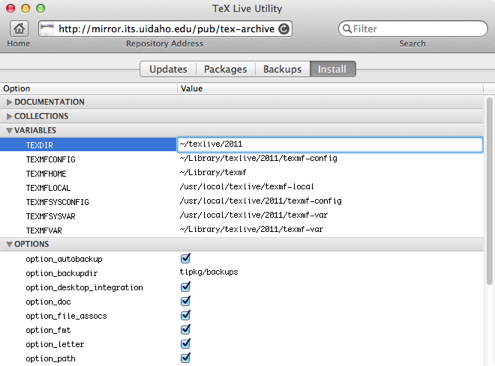

Installation
One might reasonbly think that installation of TeX Live should be the first item presented in the manual. After all, TeX Live Utility is mostly uselesss until TeX Live is installed! However, TeX Live Utility's installation feature is actually hidden, since most users should install via MacTeX. This feature is primarily intended for users who do not have administrative (root) access to their systems, so cannot install MacTeX.
Limitations 1. Configuration options are somewhat arcane.
2. You need a network connection for the duration of the installation (unless you install from a file: URL-based repository).
3. Most importantly, the TeX Distribution Preference Pane is not installed, and the /usr/texbin symbolic link is not created. This means that you will need to manually adjust path settings in your TeX-using programs.
If you are convinced that you need this feature, you need to activate it in Terminal. Quit TeX Live Utility, then execute the following command in Terminal: `defaults write com.googlecode.mactlmgr.tlu TLMEnableNetInstall 1`. When you relaunch TeX Live Utility, you will have a third tab in the main window, and a new Install TeX Live item in the Actions menu.

The primary value of interest for most users is TEXDIR, which is the destination for installing TeX Live. Change it to any location on the system for which you have write permission. TeX Live Utility does not validate any of the variables here, so you're at the mercy of the TeX Live installer script (which works very well indeed).
This is a fairly trivial GUI wrapper around the default UNIX® install script for TeX Live. If you use a network repository (i.e., ftp: or http: URL), all of the content will be downloaded over the course of the install process. For more details, see www.tug.org—quickinstall.html.
The primary advantage of using TeX Live Utility versus running the interactive script in Terminal is that TeX Live Utility defaults to the environment variables from MacTeX, so your installation will use ~/Library/texmf as your TEXMFHOME (place where you install custom packages). This convention dates back to Gerben Wierda's gwTeX, and is consistent with the extant documentation on TeX for Mac OS X.